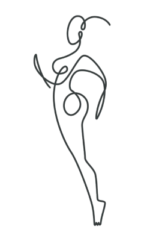
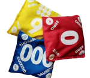
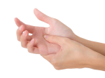

La psychomotricité est une discipline paramédicale qui
aide à harmoniser le corps et l'esprit grâce à des
activités ludiques et des exercices adaptés. Elle
favorise le
bien-être, la
confianceen soi et la gestion
des émotions. J'accompagne les adultes pour les aider à se sentir
mieux dans leur corps et les
sécuriser dans leur quotidien.

Pourquoi me rencontrer ?
Vous ressentez des difficultés pour identifier,
comprendre, exprimer vos émotions.
Vous
redoutez le regard des autres ou craignez d'être jugé en
permanence.
Vous n'aimez pas votre reflet dans le miroir. Le
stress et l'anxiété envahissent votre quotidien.
Vous
souffrez de douleurs physiques qui vous empêchent de faire
des activités que vous aimez.
A quoi ressemble une séance ?
Une séance se compose d'un échange verbal au cours
duquel nous parlons de vous. Dans un second temps,
je vous fais une proposition corporelle adaptée à
votre besoin et vos affinités pour vous aider à
construire votre
"boîte à outil".
Voici quelques exemples de propositions corporelles.
Argile
Matière qui se transforme au gré des gestes et
qui en stimulant la
sensorialité, aide à exprimer les
émotions enfouies et à se connecter à l'instant présent en se détachant de toute recherche de
performance.
Sacs lestés

Une séance avec les sacs lestés permet de
ressentir son corps et favorise la détente. Ils
peuvent être disposés sur l'ensemble du corps ou
être utilisés comme "poids" à jeter pour de la
décharge émotionnelle.
Auto-massage

S'apporter de la douceur et du réconfort en
massant soi-même son corps. Cet outil peut être
repris et adapté au quotidien pour favoriser
l'autonomie et améliorer la relation au
corps.
Lisa Tastevin
Psychomotricienne pour Adultes
Parcours
Passionnée par la psychologie, je suis titulaire
d'une
licence dans ce domaine. Désireuse d'élargir mes
compétences et d'ajouter une dimension corporelle à
mon approche, j'ai poursuivi ma formation en
intégrant une école de psychomotricité.
Diplômée de l'école de Loos (59), je combine désormais ces
deux disciplines pour offrir une approche globale et
complète.
Mon rôle à la Clinique
Je travaille depuis 4 ans dans une clinique de
santé mentale à Lille. J'accompagne
individuellement et en
groupe des patients
adultes pour les aider à se réconcilier avec leur corps et
exprimer leurs émotions. Je
forme d'autres soignants sur le sujet du
psychotraumatisme et son accompagnement.
Mon Cabinet
Je propose des séances personnalisées pour
prendre en soin les adultes rencontrant des difficultés motrices,
émotionnelles ou relationnelles. J'évalue les
besoins spécifiques de chaque patient afin de
rétablir un équilibre entre le corps et l'esprit à
travers des exercices adaptés. Mon approche vise à
améliorer la
confiance en soi et le
bien-être global, dans un cadre
bienveillant et
sécurisé.